library("idealista18")
BCN <- get(data("Barcelona_Sale"))Árboles de Decisión, Random Forest y XGBoost
1 Descripción del problema
En este ejemplo se entrena un árbol de regresión para predecir el precio unitario de la vivienda en Madrid. Para ello se utilizan los datos de viviendas a la venta en Madrid publicados en Idealista durante el año 2018. Estos datos están incluidos en el paquete idealista18. Las variables que contienen nuestra base de datos son las siguientes:
“ASSETID” : Identificador único del activo
“PERIOD” : Fecha AAAAMM, indica el trimestre en el que se extrajo el anuncio, utilizamos AAAA03 para el 1.er trimestre, AAAA06 para el 2.º, AAAA09 para el 3.er y AAAA12 para el 4.º
“PRICE” : Precio de venta del anuncio en idealista expresado en euros
“UNITPRICE” : Precio en euros por metro cuadrado
“CONSTRUCTEDAREA” : Superficie construida de la casa en metros cuadrados
“ROOMNUMBER” : Número de habitaciones
“BATHNUMBER” : Número de baños
“HASTERRACE” : Variable ficticia para terraza (toma 1 si hay una terraza, 0 en caso contrario)
“HASLIFT” : Variable ficticia para ascensor (toma 1 si hay ascensor en el edificio, 0 en caso contrario)
“HASAIRCONDITIONING” : Variable ficticia para Aire Acondicionado (toma 1 si hay una Aire Acondicionado, 0 en caso contrario)
“AMENITYID” : Indica las comodidades incluidas (1 - sin muebles, sin comodidades de cocina, 2 - comodidades de cocina, sin muebles, 3 - comodidades de cocina, muebles)
“HASPARKINGSPACE” : Variable ficticia para estacionamiento (toma 1 si el estacionamiento está incluido en el anuncio, 0 en caso contrario)
“ISPARKINGSPACEINCLUDEDINPRICE” : Variable ficticia para estacionamiento (toma 1 si el estacionamiento está incluido en el anuncio, 0 en caso contrario)
“PARKINGSPACEPRICE” : Precio de plaza de parking en euros
“HASNORTHORIENTATION” : Variable ficticia para orientación (toma 1 si la orientación es Norte en el anuncio, 0 en caso contrario) - Nota importante: las características de orientación no son características ortogonales, una casa orientada al norte también puede estar orientada al este
“HASSOUTHORIENTATION” : Variable ficticia para orientación (toma 1 si la orientación es Sur en el anuncio, 0 en caso contrario) - Nota importante: las características de orientación no son características ortogonales, una casa orientada al norte también puede estar orientada al este
“HASEASTORIENTATION” : Variable ficticia para orientación (toma 1 si la orientación es Este en el anuncio, 0 en caso contrario) - Nota importante: las características de orientación no son características ortogonales, una casa orientada al norte también puede estar orientada al este
“HASWESTORIENTATION” : Variable ficticia para orientación (toma 1 si la orientación es Oeste en el anuncio, 0 en caso contrario) - Nota importante: las características de orientación no son características ortogonales, una casa orientada al norte también puede estar orientada al este
“HASBOXROOM” : Variable ficticia para boxroom (toma 1 si boxroom está incluido en el anuncio, 0 en caso contrario)
“HASWARDROBE” : Variable ficticia para vestuario (toma 1 si el vestuario está incluido en el anuncio, 0 en caso contrario)
“HASSWIMMINGPOOL” : Variable ficticia para piscina (toma 1 si la piscina está incluida en el anuncio, 0 en caso contrario)
“HASDOORMAN” : Variable ficticia para portero (toma 1 si hay un portero en el edificio, 0 en caso contrario)
“HASGARDEN” : Variable ficticia para jardín (toma 1 si hay un jardín en el edificio, 0 en caso contrario)
“ISDUPLEX” : Variable ficticia para dúplex (toma 1 si es un dúplex, 0 en caso contrario)
“ISSTUDIO” : Variable ficticia para piso de soltero (estudio en español) (toma 1 si es un piso para una sola persona, 0 en caso contrario)
“ISINTOPFLOOR” : Variable ficticia que indica si el apartamento está ubicado en el piso superior (toma 1 en el piso superior, 0 en caso contrario)
“CONSTRUCTIONYEAR” : Año de construcción (fuente: anunciante)
“FLOORCLEAN” : Indica el número de piso del apartamento comenzando desde el valor 0 para la planta baja (fuente: anunciante)
“FLATLOCATIONID” : Indica el tipo de vistas que tiene el piso (1 - exterior, 2 - interior)
“CADCONSTRUCTIONYEAR” : Año de construcción según fuente catastral (fuente: catastro), tenga en cuenta que esta cifra puede diferir de la proporcionada por el anunciante
“CADMAXBUILDINGFLOOR” : Superficie máxima del edificio (fuente: catastro)
“CADDWELLINGCOUNT” : Recuento de viviendas en el edificio (fuente: catastro)
“CADASTRALQUALITYID” : Calidad catastral (fuente: catastro)
“BUILTTYPEID_1” : Valor ficticio para estado del piso: 1 obra nueva 0 en caso contrario (fuente: anunciante)
“BUILTTYPEID_2” : Valor ficticio para condición plana: 1 segundero a restaurar 0 en caso contrario (fuente: anunciante)
“BUILTTYPEID_3” : Valor ficticio para estado plano: 1 de segunda mano en buen estado 0 en caso contrario (fuente: anunciante)
“DISTANCE_TO_CITY_CENTER” : Distancia al centro de la ciudad en km
“DISTANCE_TO_METRO” : Distancia istancia a una parada de metro en km.
“DISTANCE_TO_DIAGONAL” : Distancia a la Avenida Diagonal en km; Diagonal es una calle principal que corta la ciudad en diagonal a la cuadrícula de calles.
“LONGITUDE” : Longitud del activo
“LATITUDE” : Latitud del activo
“geometry” : Geometría de características simples en latitud y longitud.
Fuente: Idealista
# Filtramos la epoca a Navidad
BCN <- BCN[which(BCN$PERIOD == "201812"), ]
pisos_sf_BCN <- st_as_sf(BCN, coords = c("LONGITUDE", "LATITUDE"), crs = 4326)
# Leer shapefile de secciones censales
secciones <- st_read("C:/Users/sergi/Downloads/Shapefile/seccionado_2024/SECC_CE_20240101.shp")
# Transformar pisos al sistema de referencia de las secciones censales
pisos_sf_BCN <- st_transform(pisos_sf_BCN, crs = st_crs(secciones))
# Hacer el match entre pisos y secciones censales
pisos_con_seccion <- st_join(pisos_sf_BCN, secciones, join = st_within)
# Convertir a dataframe para exportar
BCN <- as.data.frame(pisos_con_seccion)
rm(Barcelona_Sale, Barcelona_Polygons, Barcelona_POIS, pisos_con_seccion, pisos_sf_BCN, secciones); gc()rentaMedia <- read.csv("https://raw.githubusercontent.com/miguel-angel-monjas/spain-datasets/refs/heads/master/data/Renta%20media%20en%20Espa%C3%B1a.csv")
# NOs quedamos con los datos que nos interesa de Barcelona
rentaMedia <- rentaMedia[which(rentaMedia$Provincia == "Barcelona" & rentaMedia$Tipo.de.elemento == "sección"), ]
rentaMedia$Código.de.territorio <- paste0("0", rentaMedia$Código.de.territorio)cols <- c("Renta.media.por.persona", "Renta.media.por.hogar")
m <- match(BCN$CUSEC, rentaMedia$Código.de.territorio)
BCN[, cols] <- rentaMedia[m, cols]2 Preprocessing de los datos
BCN <- BCN %>%
select(-X, -PRICE, -LONGITUDE, -LATITUDE, -geometry, -CONSTRUCTIONYEAR,
-ASSETID, -PERIOD, -CUSEC, -CSEC, -CMUN, -CPRO, -CCA, -CUDIS, -CLAU2,
-NPRO, -NCA, -CNUT0, -CNUT1, -CNUT2, -CNUT3, -NMUN, -Shape_Leng,
-Shape_Area, -geometry, -CUMUN, -CADASTRALQUALITYID) %>%
mutate(
across(
.cols = starts_with(c("HAS", "IS")),
.fns = ~ case_when(. == 0 ~ "No", . == 1 ~ "Si"),
.names = "{.col}"),
AMENITYID = case_when(
AMENITYID == 1 ~ "SinMuebleSinCocina", AMENITYID == 2 ~ "CocinaSinMuebles",
AMENITYID == 3 ~ "CocinaMuebles"),
FLATLOCATIONID = case_when(
FLATLOCATIONID == 1 ~ "exterior", FLATLOCATIONID == 2 ~ "interior",
.default = "noInfo"),
BUILTTYPEID_1 = case_when(
BUILTTYPEID_1 == 0 ~ "noObraNueva", BUILTTYPEID_1 == 1 ~ "obraNueva"),
BUILTTYPEID_2 = case_when(
BUILTTYPEID_2 == 0 ~ "noRestaurar", BUILTTYPEID_2 == 1 ~ "Restaurar"),
BUILTTYPEID_3 = case_when(
BUILTTYPEID_3 == 0 ~ "noSegundaMano", BUILTTYPEID_3 == 1 ~ "SegundaMano"),
FLOORCLEAN = replace_na(FLOORCLEAN, 0),
CDIS = case_when(
CDIS == 1 ~ "Ciutat-Vella", CDIS == 2 ~ "Eixample", CDIS == 3 ~ "Sants-Montjuic",
CDIS == 4 ~ "Les Corts", CDIS == 5 ~ "Sarrià-Sant Gervasi",
CDIS == 6 ~ "Gràcia", CDIS == 7 ~ "Horta-Guinardó", CDIS == 8 ~ "Nou Barris",
CDIS == 9 ~ "Sant Andreu", CDIS == 10 ~ "Sant Martí"),
RENTA = case_when(
Renta.media.por.hogar < 30000 ~ "Baja",
Renta.media.por.hogar >= 30000 & Renta.media.por.hogar <= 50000 ~ "Media",
Renta.media.por.hogar > 50000 ~ "Alta"
)
) %>%
select(-Renta.media.por.hogar, -Renta.media.por.persona)2.1 Análisi descriptivo de los datos
## Descriptiva de los datos
library(DataExplorer)
library(lubridate)
library(dplyr)
## Data Manipulation
library(reshape2)
## Plotting
library(ggplot2)
## Descripción completa
DataExplorer::introduce(BCN) rows columns discrete_columns continuous_columns all_missing_columns
1 23334 36 24 12 0
total_missing_values complete_rows total_observations memory_usage
1 0 23334 840024 6078888## Descripción de la bbdd
plot_intro(BCN)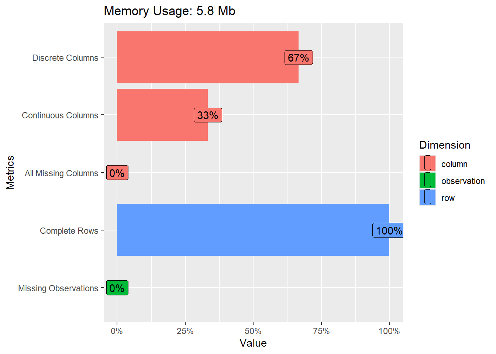
## Descripción de los missings
plot_missing(BCN)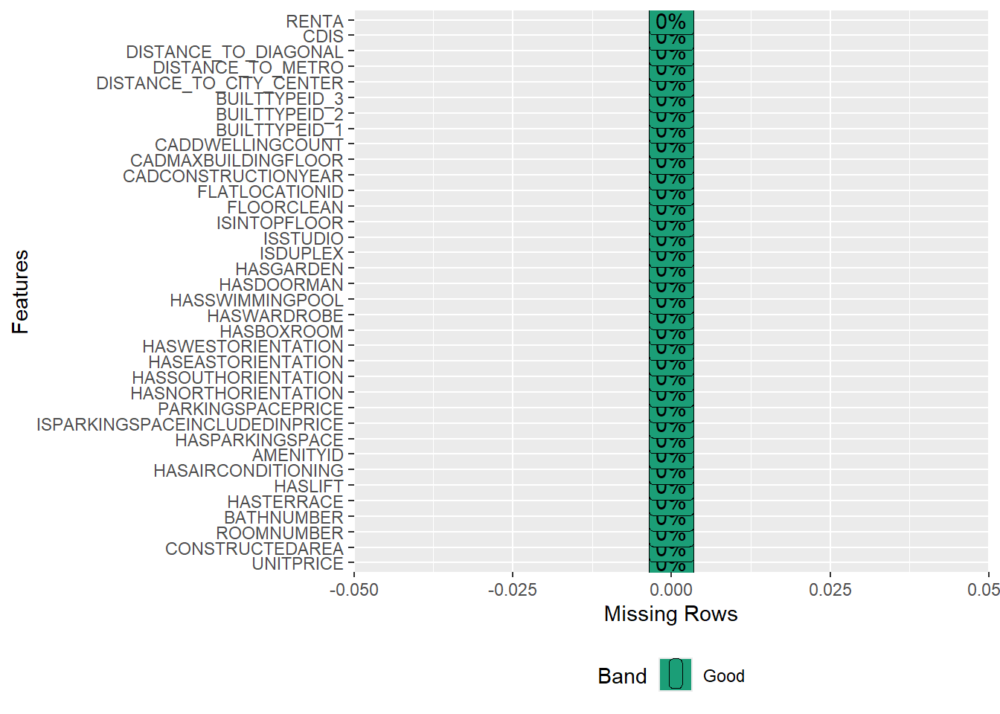
## Descripción de las varaibles categoricas
plot_bar(BCN)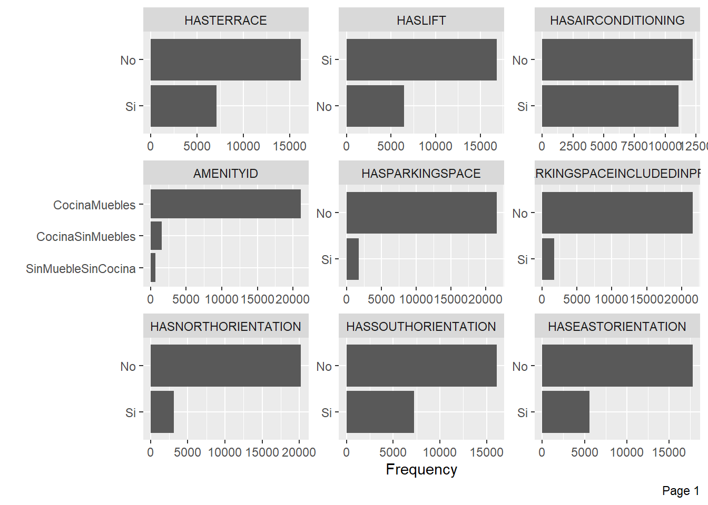
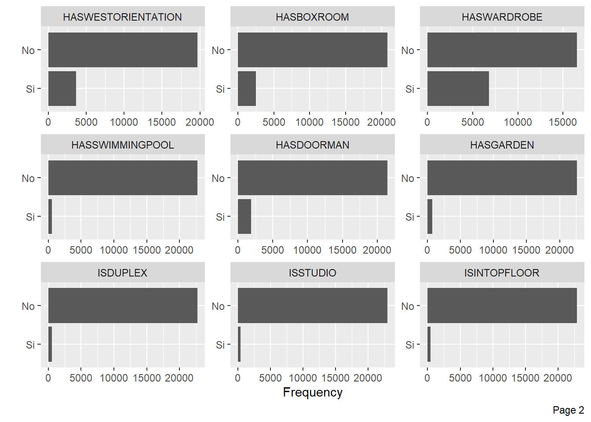
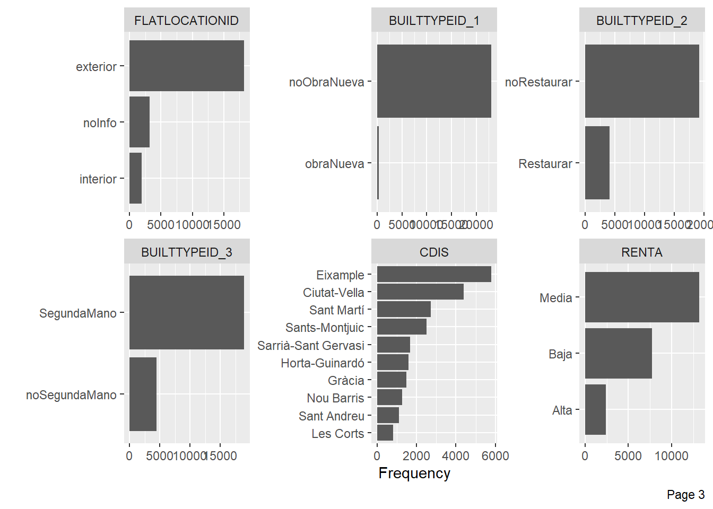
## Descripción variables numéricas
plot_histogram(BCN)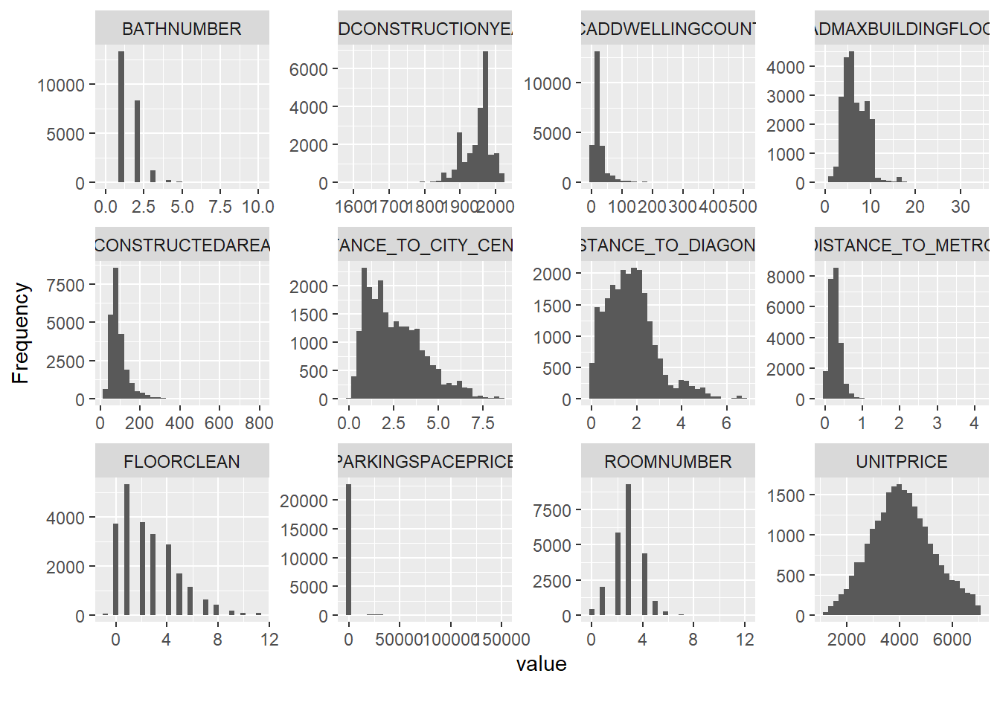
plot_density(BCN)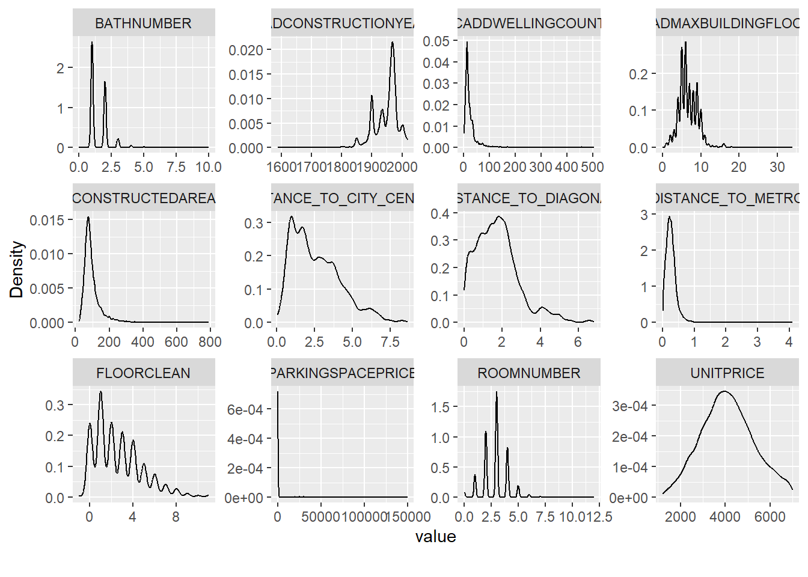
plot_qq(BCN)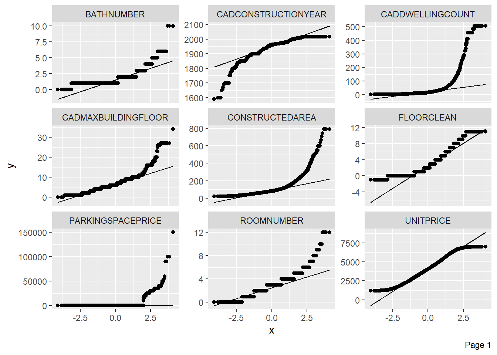
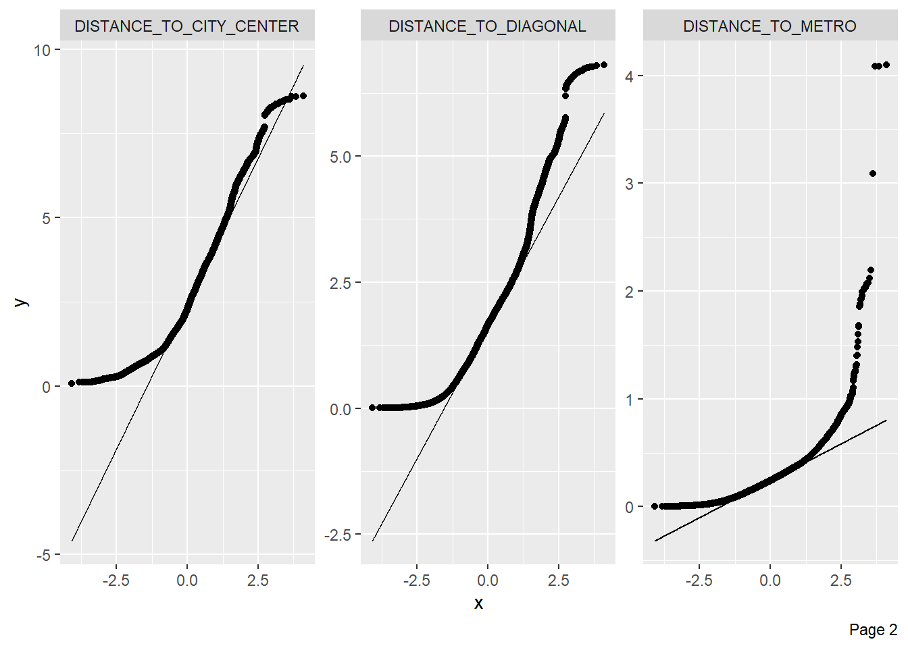
plot_correlation(BCN)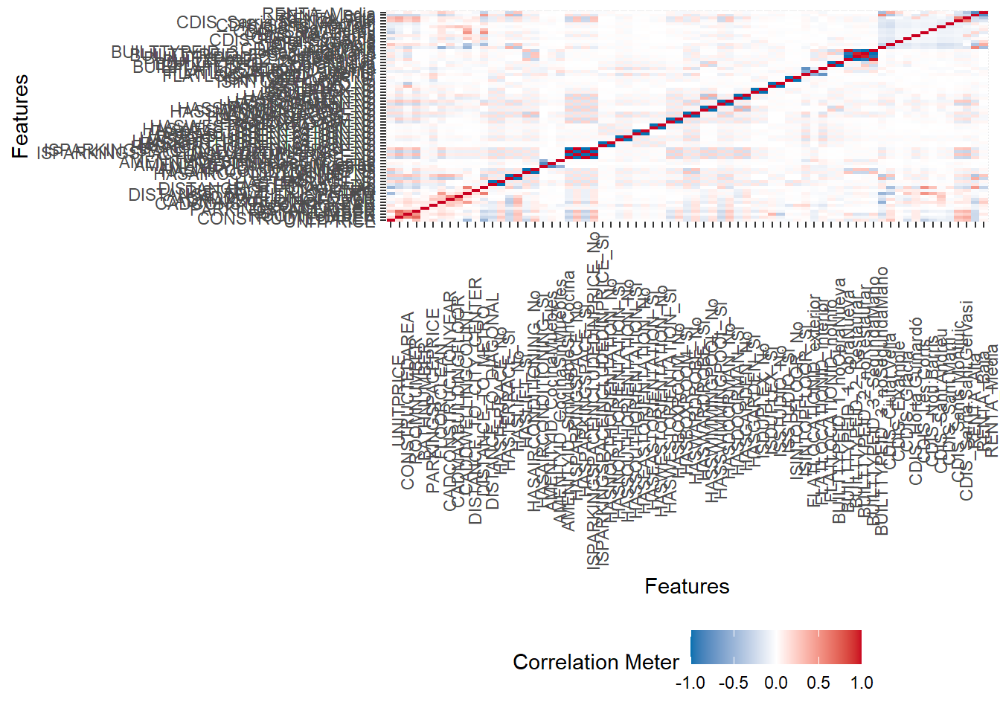
3 Data Manipulation
library(caret)
set.seed(1994)
index <- caret::createDataPartition(BCN$UNITPRICE, p = 0.8, list = FALSE)
rtrain <- BCN %>% slice(index) %>% na.omit()
rtest <- BCN %>% slice(-index) %>% na.omit()from sklearn.preprocessing import LabelEncoder
# Crear un LabelEncoder
le = LabelEncoder()
# Lista de variables a transformar
columns_to_encode = ['HASTERRACE', 'HASLIFT', 'HASAIRCONDITIONING', 'AMENITYID',
'HASPARKINGSPACE', 'ISPARKINGSPACEINCLUDEDINPRICE', 'HASNORTHORIENTATION',
'HASSOUTHORIENTATION', 'HASEASTORIENTATION', 'HASWESTORIENTATION',
'HASBOXROOM', 'HASWARDROBE', 'HASSWIMMINGPOOL', 'HASDOORMAN', 'HASGARDEN',
'ISDUPLEX', 'ISSTUDIO', 'ISINTOPFLOOR', 'FLOORCLEAN', 'FLATLOCATIONID',
'CADMAXBUILDINGFLOOR', 'CADDWELLINGCOUNT','BUILTTYPEID_1', 'BUILTTYPEID_2',
'BUILTTYPEID_3', 'CDIS', 'RENTA']
# Aplicar LabelEncoder a cada columna de la lista
for col in columns_to_encode:
if col in pyBCN.columns: # Verificar que la columna existe en el DataFrame
pyBCN[col] = le.fit_transform(pyBCN[col].astype(str)) # Convertir a string si no es categóricafrom sklearn.model_selection import train_test_split
# dividimos la base de datos
X = pyBCN.drop(columns=["RENTA"])
pyX_train, pyX_test, pyy_train, pyy_test = train_test_split(
X, pyBCN['RENTA'], test_size = 0.2, random_state = 1994)from sklearn.preprocessing import StandardScaler
# Scale dataset
sc = StandardScaler()
pyX_train = sc.fit_transform(pyX_train)
pyX_test = sc.fit_transform(pyX_test)4 Árboles de decisión
4.1 Creación del árbol
library(rpart)
library(rpart.plot)
set.seed(1994)
arbol <- rpart(RENTA ~ ., data = rtrain)
summary(arbol)Call:
rpart(formula = RENTA ~ ., data = rtrain)
n= 18669
CP nsplit rel error xerror xstd
1 0.38211183 0 1.0000000 1.0000000 0.008293935
2 0.06753946 1 0.6178882 0.6178882 0.007426365
3 0.04447571 2 0.5503487 0.5503487 0.007149373
4 0.02214609 4 0.4613973 0.4643338 0.006727872
5 0.01884253 5 0.4392512 0.4425548 0.006607381
6 0.01186835 6 0.4204087 0.4267711 0.006516230
7 0.01162364 8 0.3966720 0.4034014 0.006375036
8 0.01015539 10 0.3734247 0.3792977 0.006221129
9 0.01000000 12 0.3531139 0.3676740 0.006143722
Variable importance
CDIS DISTANCE_TO_CITY_CENTER DISTANCE_TO_DIAGONAL
40 24 17
CADCONSTRUCTIONYEAR CONSTRUCTEDAREA UNITPRICE
8 3 3
DISTANCE_TO_METRO BATHNUMBER ROOMNUMBER
2 1 1
Node number 1: 18669 observations, complexity param=0.3821118
predicted class=Media expected loss=0.4377846 P(node) =1
class counts: 1941 6232 10496
probabilities: 0.104 0.334 0.562
left son=2 (4541 obs) right son=3 (14128 obs)
Primary splits:
CDIS splits as LRRRRLRRRR, improve=2615.4350, (0 missing)
DISTANCE_TO_DIAGONAL < 1.697581 to the right, improve=1710.4180, (0 missing)
HASLIFT splits as LR, improve= 961.7684, (0 missing)
DISTANCE_TO_CITY_CENTER < 1.146692 to the left, improve= 885.2803, (0 missing)
CADCONSTRUCTIONYEAR < 1900.5 to the left, improve= 800.8061, (0 missing)
Surrogate splits:
DISTANCE_TO_CITY_CENTER < 1.146692 to the left, agree=0.853, adj=0.396, (0 split)
CADCONSTRUCTIONYEAR < 1900.5 to the left, agree=0.823, adj=0.273, (0 split)
DISTANCE_TO_DIAGONAL < 4.28574 to the right, agree=0.775, adj=0.076, (0 split)
CONSTRUCTEDAREA < 46.5 to the left, agree=0.769, adj=0.052, (0 split)
ROOMNUMBER < 11 to the right, agree=0.757, adj=0.001, (0 split)
Node number 2: 4541 observations, complexity param=0.02214609
predicted class=Baja expected loss=0.156133 P(node) =0.2432375
class counts: 0 3832 709
probabilities: 0.000 0.844 0.156
left son=4 (4294 obs) right son=5 (247 obs)
Primary splits:
DISTANCE_TO_CITY_CENTER < 0.4629643 to the right, improve=263.54560, (0 missing)
DISTANCE_TO_DIAGONAL < 1.293729 to the right, improve= 85.60347, (0 missing)
CDIS splits as L----R----, improve= 66.85504, (0 missing)
HASLIFT splits as LR, improve= 65.14028, (0 missing)
CADCONSTRUCTIONYEAR < 1950.5 to the left, improve= 50.10187, (0 missing)
Node number 3: 14128 observations, complexity param=0.06753946
predicted class=Media expected loss=0.3072622 P(node) =0.7567625
class counts: 1941 2400 9787
probabilities: 0.137 0.170 0.693
left son=6 (1990 obs) right son=7 (12138 obs)
Primary splits:
CDIS splits as -RRRL-RRRL, improve=903.3696, (0 missing)
DISTANCE_TO_DIAGONAL < 2.370657 to the right, improve=788.5626, (0 missing)
CONSTRUCTEDAREA < 137.5 to the right, improve=434.3222, (0 missing)
UNITPRICE < 2898.227 to the left, improve=369.9583, (0 missing)
BATHNUMBER < 2.5 to the right, improve=353.8536, (0 missing)
Surrogate splits:
CONSTRUCTEDAREA < 223.5 to the right, agree=0.866, adj=0.052, (0 split)
BATHNUMBER < 3.5 to the right, agree=0.864, adj=0.038, (0 split)
DISTANCE_TO_METRO < 1.634495 to the right, agree=0.860, adj=0.006, (0 split)
ROOMNUMBER < 6.5 to the right, agree=0.859, adj=0.003, (0 split)
UNITPRICE < 6992.805 to the right, agree=0.859, adj=0.001, (0 split)
Node number 4: 4294 observations, complexity param=0.01015539
predicted class=Baja expected loss=0.1152771 P(node) =0.230007
class counts: 0 3799 495
probabilities: 0.000 0.885 0.115
left son=8 (3278 obs) right son=9 (1016 obs)
Primary splits:
DISTANCE_TO_CITY_CENTER < 3.316192 to the left, improve=107.18450, (0 missing)
CDIS splits as L----R----, improve=107.18450, (0 missing)
DISTANCE_TO_DIAGONAL < 2.818623 to the left, improve= 91.99937, (0 missing)
CADCONSTRUCTIONYEAR < 1950.5 to the left, improve= 66.10102, (0 missing)
HASLIFT splits as LR, improve= 49.70642, (0 missing)
Surrogate splits:
DISTANCE_TO_DIAGONAL < 2.826385 to the left, agree=0.989, adj=0.955, (0 split)
CADCONSTRUCTIONYEAR < 1950.5 to the left, agree=0.886, adj=0.517, (0 split)
UNITPRICE < 2840.561 to the right, agree=0.876, adj=0.475, (0 split)
CADDWELLINGCOUNT < 30.5 to the left, agree=0.789, adj=0.106, (0 split)
CADMAXBUILDINGFLOOR < 7.5 to the left, agree=0.776, adj=0.053, (0 split)
Node number 5: 247 observations
predicted class=Media expected loss=0.1336032 P(node) =0.01323049
class counts: 0 33 214
probabilities: 0.000 0.134 0.866
Node number 6: 1990 observations, complexity param=0.01162364
predicted class=Alta expected loss=0.3613065 P(node) =0.1065938
class counts: 1271 0 719
probabilities: 0.639 0.000 0.361
left son=12 (1077 obs) right son=13 (913 obs)
Primary splits:
CONSTRUCTEDAREA < 119.5 to the right, improve=121.31850, (0 missing)
BATHNUMBER < 2.5 to the right, improve= 87.03903, (0 missing)
DISTANCE_TO_DIAGONAL < 0.5534786 to the left, improve= 85.36516, (0 missing)
CDIS splits as ----R----L, improve= 68.18003, (0 missing)
UNITPRICE < 5287.749 to the right, improve= 60.24694, (0 missing)
Surrogate splits:
ROOMNUMBER < 3.5 to the right, agree=0.790, adj=0.542, (0 split)
BATHNUMBER < 1.5 to the right, agree=0.747, adj=0.448, (0 split)
HASTERRACE splits as RL, agree=0.647, adj=0.230, (0 split)
HASPARKINGSPACE splits as RL, agree=0.641, adj=0.217, (0 split)
ISPARKINGSPACEINCLUDEDINPRICE splits as RL, agree=0.641, adj=0.217, (0 split)
Node number 7: 12138 observations, complexity param=0.04447571
predicted class=Media expected loss=0.2529247 P(node) =0.6501687
class counts: 670 2400 9068
probabilities: 0.055 0.198 0.747
left son=14 (2820 obs) right son=15 (9318 obs)
Primary splits:
DISTANCE_TO_DIAGONAL < 2.370657 to the right, improve=832.9688, (0 missing)
CDIS splits as -RRL--RLL-, improve=615.9082, (0 missing)
UNITPRICE < 2898.227 to the left, improve=380.3717, (0 missing)
DISTANCE_TO_CITY_CENTER < 3.940257 to the right, improve=338.4368, (0 missing)
CONSTRUCTEDAREA < 80.5 to the left, improve=178.0100, (0 missing)
Surrogate splits:
DISTANCE_TO_CITY_CENTER < 4.058752 to the right, agree=0.897, adj=0.558, (0 split)
CDIS splits as -RRL--LRR-, agree=0.816, adj=0.206, (0 split)
UNITPRICE < 2753.972 to the left, agree=0.811, adj=0.184, (0 split)
DISTANCE_TO_METRO < 0.7218963 to the right, agree=0.780, adj=0.051, (0 split)
CADMAXBUILDINGFLOOR < 26.5 to the right, agree=0.769, adj=0.005, (0 split)
Node number 8: 3278 observations
predicted class=Baja expected loss=0.05308115 P(node) =0.1755852
class counts: 0 3104 174
probabilities: 0.000 0.947 0.053
Node number 9: 1016 observations, complexity param=0.01015539
predicted class=Baja expected loss=0.3159449 P(node) =0.05442177
class counts: 0 695 321
probabilities: 0.000 0.684 0.316
left son=18 (712 obs) right son=19 (304 obs)
Primary splits:
DISTANCE_TO_DIAGONAL < 3.420441 to the right, improve=181.26100, (0 missing)
DISTANCE_TO_CITY_CENTER < 4.8151 to the right, improve=162.58570, (0 missing)
UNITPRICE < 2586.19 to the left, improve= 62.53053, (0 missing)
HASLIFT splits as LR, improve= 54.20484, (0 missing)
CONSTRUCTEDAREA < 74.5 to the left, improve= 31.09944, (0 missing)
Surrogate splits:
DISTANCE_TO_CITY_CENTER < 5.091757 to the right, agree=0.958, adj=0.859, (0 split)
UNITPRICE < 3251.667 to the left, agree=0.775, adj=0.247, (0 split)
CADCONSTRUCTIONYEAR < 1954.5 to the right, agree=0.708, adj=0.023, (0 split)
BUILTTYPEID_1 splits as LR, agree=0.707, adj=0.020, (0 split)
DISTANCE_TO_METRO < 0.02808259 to the right, agree=0.707, adj=0.020, (0 split)
Node number 12: 1077 observations
predicted class=Alta expected loss=0.2005571 P(node) =0.05768922
class counts: 861 0 216
probabilities: 0.799 0.000 0.201
Node number 13: 913 observations, complexity param=0.01162364
predicted class=Media expected loss=0.449069 P(node) =0.0489046
class counts: 410 0 503
probabilities: 0.449 0.000 0.551
left son=26 (495 obs) right son=27 (418 obs)
Primary splits:
CDIS splits as ----R----L, improve=47.94928, (0 missing)
DISTANCE_TO_DIAGONAL < 0.5540544 to the left, improve=44.18423, (0 missing)
UNITPRICE < 5289.352 to the right, improve=37.28880, (0 missing)
DISTANCE_TO_METRO < 0.2951583 to the right, improve=24.68798, (0 missing)
DISTANCE_TO_CITY_CENTER < 2.14678 to the left, improve=21.64891, (0 missing)
Surrogate splits:
CADDWELLINGCOUNT < 30.5 to the left, agree=0.729, adj=0.409, (0 split)
DISTANCE_TO_DIAGONAL < 1.062684 to the right, agree=0.705, adj=0.356, (0 split)
UNITPRICE < 4821.591 to the right, agree=0.677, adj=0.294, (0 split)
CADMAXBUILDINGFLOOR < 8.5 to the left, agree=0.662, adj=0.261, (0 split)
DISTANCE_TO_CITY_CENTER < 3.575557 to the left, agree=0.623, adj=0.177, (0 split)
Node number 14: 2820 observations, complexity param=0.04447571
predicted class=Baja expected loss=0.4553191 P(node) =0.1510525
class counts: 95 1536 1189
probabilities: 0.034 0.545 0.422
left son=28 (2010 obs) right son=29 (810 obs)
Primary splits:
CDIS splits as -RRL--RLL-, improve=202.04190, (0 missing)
DISTANCE_TO_CITY_CENTER < 2.380396 to the left, improve=170.89780, (0 missing)
DISTANCE_TO_DIAGONAL < 3.446593 to the left, improve=103.80040, (0 missing)
CADCONSTRUCTIONYEAR < 1971.5 to the left, improve= 77.57975, (0 missing)
CONSTRUCTEDAREA < 86.5 to the left, improve= 62.41583, (0 missing)
Surrogate splits:
DISTANCE_TO_CITY_CENTER < 5.730574 to the left, agree=0.819, adj=0.370, (0 split)
DISTANCE_TO_DIAGONAL < 3.716013 to the left, agree=0.759, adj=0.160, (0 split)
CONSTRUCTEDAREA < 130.5 to the left, agree=0.716, adj=0.012, (0 split)
BATHNUMBER < 2.5 to the left, agree=0.715, adj=0.006, (0 split)
DISTANCE_TO_METRO < 0.01826087 to the right, agree=0.714, adj=0.005, (0 split)
Node number 15: 9318 observations, complexity param=0.01186835
predicted class=Media expected loss=0.1544323 P(node) =0.4991162
class counts: 575 864 7879
probabilities: 0.062 0.093 0.846
left son=30 (523 obs) right son=31 (8795 obs)
Primary splits:
DISTANCE_TO_CITY_CENTER < 0.871618 to the left, improve=157.24670, (0 missing)
CDIS splits as -RRL--RLL-, improve=145.36290, (0 missing)
CADDWELLINGCOUNT < 167.5 to the right, improve= 73.55115, (0 missing)
CONSTRUCTEDAREA < 135.5 to the right, improve= 56.59289, (0 missing)
DISTANCE_TO_DIAGONAL < 1.820647 to the right, improve= 55.50302, (0 missing)
Surrogate splits:
BATHNUMBER < 0.5 to the left, agree=0.944, adj=0.002, (0 split)
Node number 18: 712 observations
predicted class=Baja expected loss=0.1207865 P(node) =0.03813809
class counts: 0 626 86
probabilities: 0.000 0.879 0.121
Node number 19: 304 observations
predicted class=Media expected loss=0.2269737 P(node) =0.01628368
class counts: 0 69 235
probabilities: 0.000 0.227 0.773
Node number 26: 495 observations
predicted class=Alta expected loss=0.4020202 P(node) =0.02651454
class counts: 296 0 199
probabilities: 0.598 0.000 0.402
Node number 27: 418 observations
predicted class=Media expected loss=0.2727273 P(node) =0.02239006
class counts: 114 0 304
probabilities: 0.273 0.000 0.727
Node number 28: 2010 observations, complexity param=0.01884253
predicted class=Baja expected loss=0.3278607 P(node) =0.1076651
class counts: 35 1351 624
probabilities: 0.017 0.672 0.310
left son=56 (1748 obs) right son=57 (262 obs)
Primary splits:
DISTANCE_TO_DIAGONAL < 3.446593 to the left, improve=135.93570, (0 missing)
DISTANCE_TO_CITY_CENTER < 2.380396 to the left, improve=112.73140, (0 missing)
DISTANCE_TO_METRO < 0.3243732 to the left, improve= 83.82446, (0 missing)
CADCONSTRUCTIONYEAR < 1967.5 to the left, improve= 70.86276, (0 missing)
CADMAXBUILDINGFLOOR < 7.5 to the left, improve= 37.15447, (0 missing)
Surrogate splits:
DISTANCE_TO_CITY_CENTER < 5.208402 to the left, agree=0.949, adj=0.611, (0 split)
DISTANCE_TO_METRO < 0.7342067 to the left, agree=0.904, adj=0.267, (0 split)
PARKINGSPACEPRICE < 28451 to the left, agree=0.872, adj=0.015, (0 split)
CADMAXBUILDINGFLOOR < 1.5 to the right, agree=0.872, adj=0.015, (0 split)
Node number 29: 810 observations
predicted class=Media expected loss=0.3024691 P(node) =0.04338743
class counts: 60 185 565
probabilities: 0.074 0.228 0.698
Node number 30: 523 observations, complexity param=0.01186835
predicted class=Media expected loss=0.4760994 P(node) =0.02801436
class counts: 249 0 274
probabilities: 0.476 0.000 0.524
left son=60 (284 obs) right son=61 (239 obs)
Primary splits:
DISTANCE_TO_DIAGONAL < 0.990107 to the left, improve=165.999900, (0 missing)
DISTANCE_TO_METRO < 0.1705538 to the right, improve= 38.560880, (0 missing)
DISTANCE_TO_CITY_CENTER < 0.44858 to the right, improve= 36.859370, (0 missing)
UNITPRICE < 4976.906 to the right, improve= 12.669910, (0 missing)
CONSTRUCTEDAREA < 124.5 to the right, improve= 9.569507, (0 missing)
Surrogate splits:
DISTANCE_TO_METRO < 0.1699124 to the right, agree=0.744, adj=0.439, (0 split)
DISTANCE_TO_CITY_CENTER < 0.4805939 to the right, agree=0.728, adj=0.406, (0 split)
UNITPRICE < 4976.906 to the right, agree=0.642, adj=0.218, (0 split)
CADCONSTRUCTIONYEAR < 1941.5 to the left, agree=0.587, adj=0.096, (0 split)
CADDWELLINGCOUNT < 24.5 to the left, agree=0.583, adj=0.088, (0 split)
Node number 31: 8795 observations
predicted class=Media expected loss=0.1353042 P(node) =0.4711018
class counts: 326 864 7605
probabilities: 0.037 0.098 0.865
Node number 56: 1748 observations
predicted class=Baja expected loss=0.2580092 P(node) =0.09363115
class counts: 35 1297 416
probabilities: 0.020 0.742 0.238
Node number 57: 262 observations
predicted class=Media expected loss=0.2061069 P(node) =0.01403396
class counts: 0 54 208
probabilities: 0.000 0.206 0.794
Node number 60: 284 observations
predicted class=Alta expected loss=0.1584507 P(node) =0.01521238
class counts: 239 0 45
probabilities: 0.842 0.000 0.158
Node number 61: 239 observations
predicted class=Media expected loss=0.041841 P(node) =0.01280197
class counts: 10 0 229
probabilities: 0.042 0.000 0.958 rpart.plot(arbol)
# Decision Tree Classification
from sklearn.tree import DecisionTreeClassifier
classifier = DecisionTreeClassifier(criterion = 'entropy', random_state = 1994)
clf = classifier.fit(pyX_train, pyy_train)from sklearn import tree
tree.plot_tree(clf)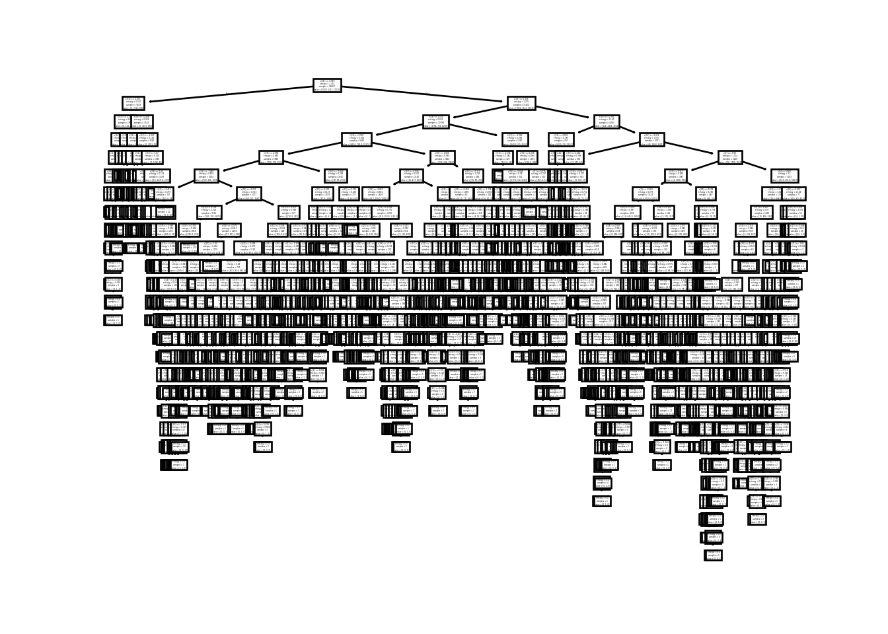
4.2 Creamos las predicciones
Aplicamos el modelo a nuestros valores de test.
predict(arbol, rtest[1:10, ]) Alta Baja Media
1 0 0.9469189 0.05308115
2 0 0.9469189 0.05308115
3 0 0.9469189 0.05308115
4 0 0.9469189 0.05308115
5 0 0.9469189 0.05308115
6 0 0.1336032 0.86639676
7 0 0.9469189 0.05308115
8 0 0.9469189 0.05308115
9 0 0.9469189 0.05308115
10 0 0.1336032 0.86639676predicciones <- predict(arbol, rtrain, type = "class")
caret::confusionMatrix(predicciones, as.factor(rtrain$RENTA))Confusion Matrix and Statistics
Reference
Prediction Alta Baja Media
Alta 1396 0 460
Baja 35 5027 676
Media 510 1205 9360
Overall Statistics
Accuracy : 0.8454
95% CI : (0.8401, 0.8506)
No Information Rate : 0.5622
P-Value [Acc > NIR] : < 2.2e-16
Kappa : 0.7207
Mcnemar's Test P-Value : < 2.2e-16
Statistics by Class:
Class: Alta Class: Baja Class: Media
Sensitivity 0.71922 0.8066 0.8918
Specificity 0.97250 0.9428 0.7902
Pos Pred Value 0.75216 0.8761 0.8451
Neg Pred Value 0.96758 0.9068 0.8504
Prevalence 0.10397 0.3338 0.5622
Detection Rate 0.07478 0.2693 0.5014
Detection Prevalence 0.09942 0.3074 0.5932
Balanced Accuracy 0.84586 0.8747 0.8410predicciones <- predict(arbol, rtest, type = "class")
caret::confusionMatrix(predicciones, as.factor(rtest$RENTA))Confusion Matrix and Statistics
Reference
Prediction Alta Baja Media
Alta 311 1 148
Baja 5 1250 171
Media 151 266 2362
Overall Statistics
Accuracy : 0.8409
95% CI : (0.8301, 0.8513)
No Information Rate : 0.5747
P-Value [Acc > NIR] : < 2.2e-16
Kappa : 0.7099
Mcnemar's Test P-Value : 3.415e-05
Statistics by Class:
Class: Alta Class: Baja Class: Media
Sensitivity 0.66595 0.8240 0.8810
Specificity 0.96451 0.9441 0.7898
Pos Pred Value 0.67609 0.8766 0.8499
Neg Pred Value 0.96290 0.9176 0.8309
Prevalence 0.10011 0.3252 0.5747
Detection Rate 0.06667 0.2680 0.5063
Detection Prevalence 0.09861 0.3057 0.5957
Balanced Accuracy 0.81523 0.8840 0.8354CM <- caret::confusionMatrix(predicciones, as.factor(rtest$RENTA)); CM <- data.frame(CM$table)
grafico <- ggplot(CM, aes(Prediction,Reference, fill= Freq)) +
geom_tile() + geom_text(aes(label=Freq)) +
scale_fill_gradient(low="white", high="#009194") +
labs(x = "Reference",y = "Prediction")
plot(grafico)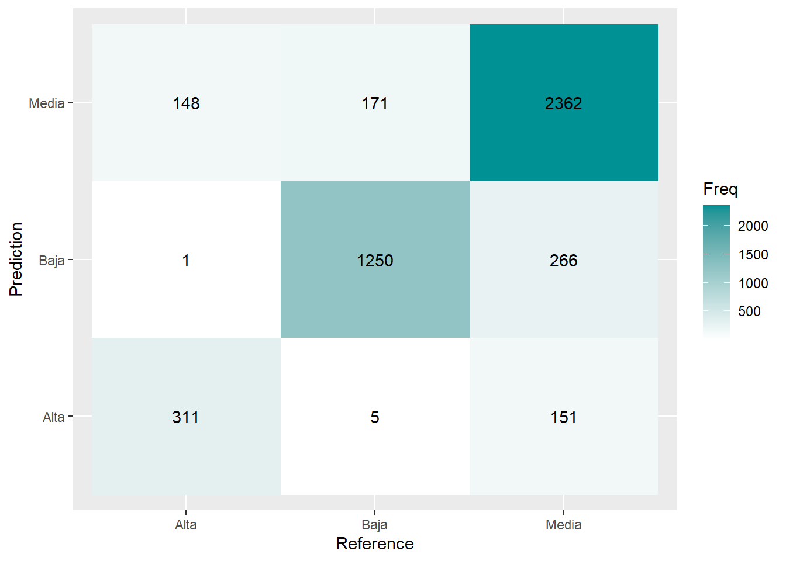
import pandas as pd
# Prediction
y_pred = classifier.predict(pyX_test)
results = pd.DataFrame({
'Real': pyy_test, # Valores reales
'Predicho': y_pred # Valores predichos
})
# Muestra los primeros 5 registros
print(results.head()) Real Predicho
2399 2 2
18420 0 0
22515 2 2
20265 1 1
10432 1 1from sklearn.metrics import classification_report
print(f'Classification Report: \n{classification_report(pyy_test, y_pred)}')Classification Report:
precision recall f1-score support
0 0.85 0.82 0.84 488
1 0.92 0.91 0.91 1522
2 0.92 0.93 0.92 2657
accuracy 0.91 4667
macro avg 0.89 0.89 0.89 4667
weighted avg 0.91 0.91 0.91 4667from sklearn.metrics import confusion_matrix
import seaborn as sns
# Confusion matrix
cf_matrix = confusion_matrix(pyy_test, y_pred)
sns.heatmap(cf_matrix, annot=True, fmt='d', cmap='Blues', cbar=False)4.3 Modelo de classificación con cross-evaluación
## Generamos los parámetros de control
trControl <- trainControl(method = "cv", number = 10, classProbs = TRUE,
summaryFunction = multiClassSummary)
## En este caso, se realiza una cros-validación de 10 etapas
# se fija una semilla aleatoria
set.seed(1994)
# se entrena el modelo
model <- train(RENTA ~ ., # . equivale a incluir todas las variables
data = rtrain,
method = "rpart",
metric = "Accuracy",
trControl = trControl)
# Obtenemos los valores del árbol óptimo
model$finalModeln= 18669
node), split, n, loss, yval, (yprob)
* denotes terminal node
1) root 18669 8173 Media (0.10396915 0.33381542 0.56221544)
2) DISTANCE_TO_DIAGONAL>=1.697581 9078 3793 Baja (0.02599692 0.58217669 0.39182639)
4) DISTANCE_TO_CITY_CENTER< 1.182486 2168 144 Baja (0.00000000 0.93357934 0.06642066) *
5) DISTANCE_TO_CITY_CENTER>=1.182486 6910 3497 Media (0.03415340 0.47192475 0.49392185)
10) DISTANCE_TO_DIAGONAL>=2.350599 4436 1689 Baja (0.02705140 0.61925158 0.35369702) *
11) DISTANCE_TO_DIAGONAL< 2.350599 2474 630 Media (0.04688763 0.20776071 0.74535166) *
3) DISTANCE_TO_DIAGONAL< 1.697581 9591 2652 Media (0.17777083 0.09873840 0.72349077) *# Generamos el gráfico del árbol
rpart.plot(model$finalModel)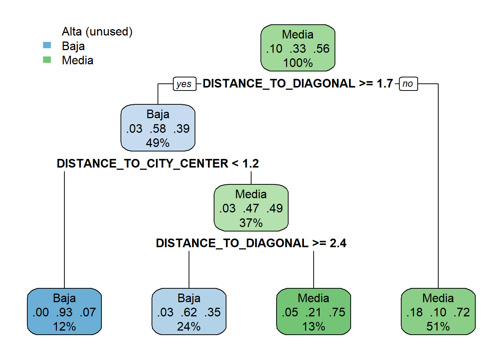
library(reshape2)
# A continuación generamos un gráfico que nos permite ver la variabilidad de los estadísticos
# calculados
ggplot(melt(model$resample[,c(2:5, 7:9, 12:13)]), aes(x = variable, y = value, fill=variable)) +
geom_boxplot(show.legend=FALSE) +
xlab(NULL) + ylab(NULL)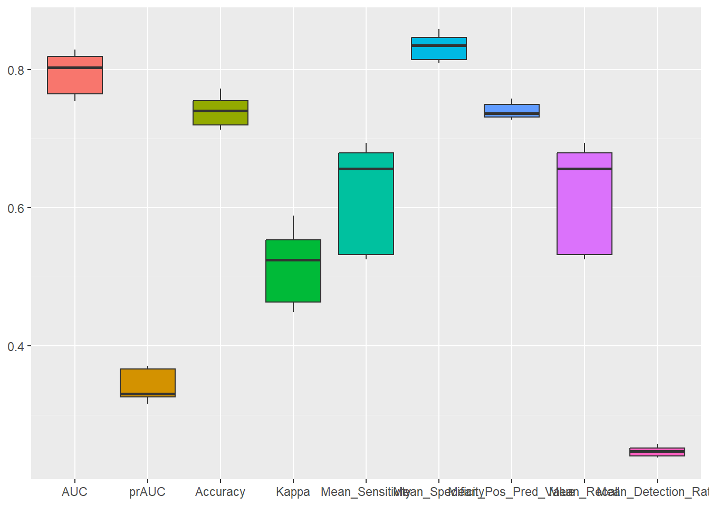
from sklearn.tree import DecisionTreeClassifier
# Modelo de árbol de decisión
model = DecisionTreeClassifier(random_state=1994)
from sklearn.model_selection import cross_val_score
# Realizar validación cruzada con 5 folds
scores = cross_val_score(model, pyX_train, pyy_train, cv=10, scoring = 'accuracy') # Métrica: accuracy
# Mostrar resultados
print(f"Accuracy por fold: {scores}")Accuracy por fold: [0.90626674 0.90680236 0.8993037 0.90305303 0.91215854 0.90787359
0.89769684 0.90836013 0.914791 0.91425509]print(f"Accuracy promedio: {scores.mean():.4f}")Accuracy promedio: 0.90714.4 Realizando hiperparámetro tunning
# Detectamos cuales son los parámetros del modelo que podemos realizar hiperparámeter tunning
modelLookup("rpart") model parameter label forReg forClass probModel
1 rpart cp Complexity Parameter TRUE TRUE TRUE# Se especifica un rango de valores típicos para el hiperparámetro
tuneGrid <- expand.grid(cp = seq(0.01,0.05,0.01))# se entrena el modelo
set.seed(1994)
model <- train(RENTA ~ .,
data = rtrain,
method = "rpart",
metric = "Accuracy",
trControl = trControl,
tuneGrid = tuneGrid)
# Obtenemos la información del mejor modelo
model$bestTune cp
1 0.01# Gráfico del árbol obtenido
rpart.plot(model$finalModel)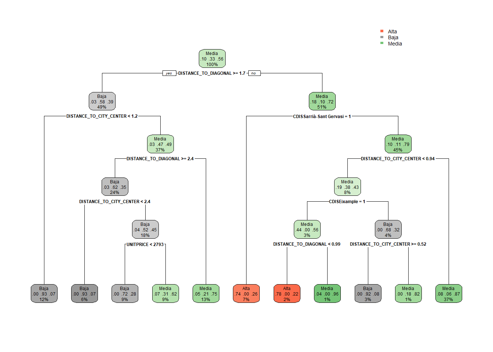
from sklearn.model_selection import GridSearchCV
# Definir rejilla de hiperparámetros
param_grid = {
'max_depth': [None, 5, 10],
'min_samples_split': [2, 5, 10],
'min_samples_leaf': [1, 2, 4]
}
# Declaramos el modelo
model = DecisionTreeClassifier(random_state=1994)
# Configurar GridSearch con validación cruzada
grid_search = GridSearchCV(estimator=model, param_grid=param_grid, cv=10, scoring='accuracy', n_jobs=-1)
# Ajustar modelo
grid_search.fit(pyX_train, pyy_train)GridSearchCV(cv=10, estimator=DecisionTreeClassifier(random_state=1994),
n_jobs=-1,
param_grid={'max_depth': [None, 5, 10],
'min_samples_leaf': [1, 2, 4],
'min_samples_split': [2, 5, 10]},
scoring='accuracy')In a Jupyter environment, please rerun this cell to show the HTML representation or trust the notebook. On GitHub, the HTML representation is unable to render, please try loading this page with nbviewer.org.
GridSearchCV(cv=10, estimator=DecisionTreeClassifier(random_state=1994),
n_jobs=-1,
param_grid={'max_depth': [None, 5, 10],
'min_samples_leaf': [1, 2, 4],
'min_samples_split': [2, 5, 10]},
scoring='accuracy')DecisionTreeClassifier(random_state=1994)
DecisionTreeClassifier(random_state=1994)
# Mostrar mejores parámetros
print(f"Mejores parámetros: {grid_search.best_params_}")Mejores parámetros: {'max_depth': None, 'min_samples_leaf': 1, 'min_samples_split': 2}print(f"Mejor accuracy: {grid_search.best_score_:.4f}")Mejor accuracy: 0.9071
from sklearn import tree
tree.plot_tree(grid_search.best_estimator_)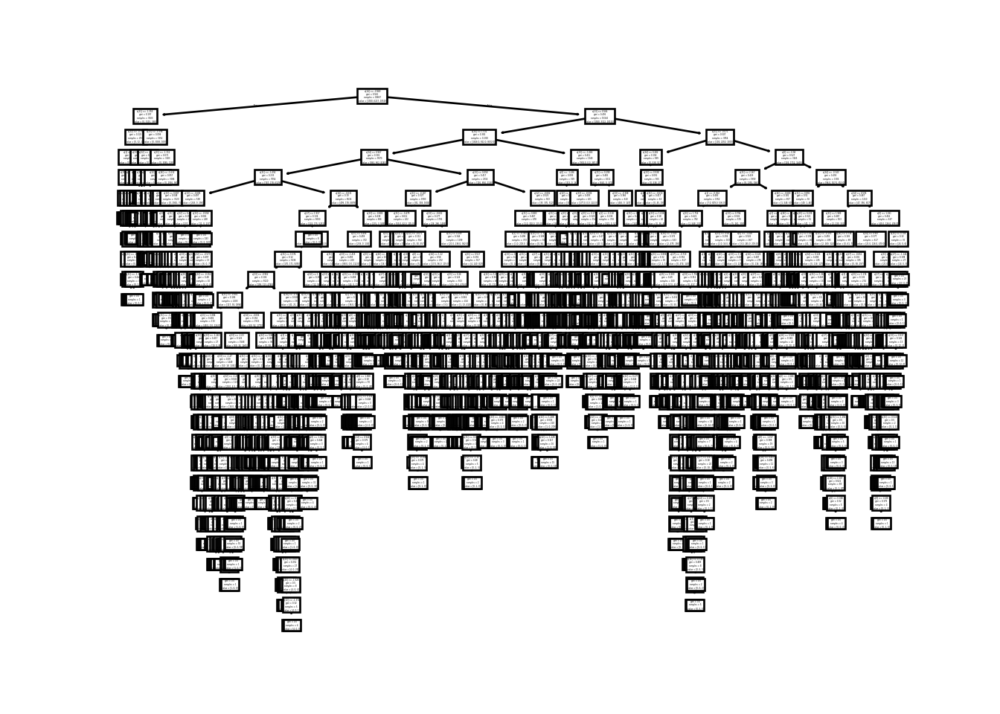
4.5 Como realizar poda de nuestro árbol
# Con el objetivo de aumentar la generalidad del árbol y facilitar su interpretación,
# se procede a reducir su tamaño podándolo. Para ello se establece el criterio de
# que un nodo terminal tiene que tener, como mínimo, 50 observaciones.
set.seed(1994)
prunedtree <- rpart(RENTA ~ ., data = rtrain,
cp= 0.01, control = rpart.control(minbucket = 50))
rpart.plot(prunedtree)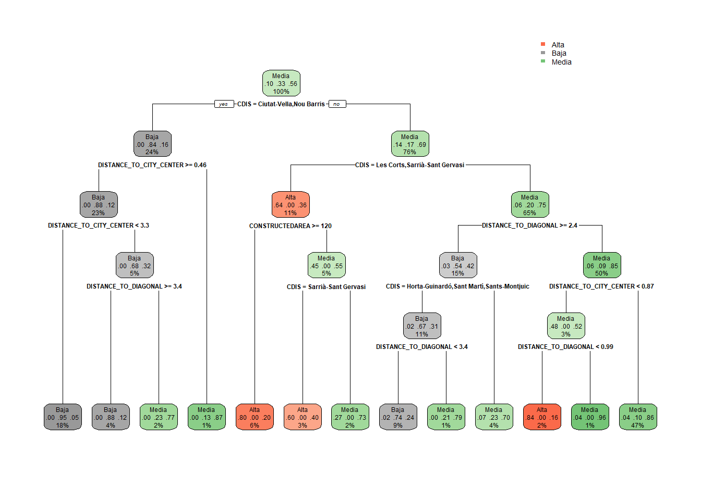
En Python, la poda de un árbol de decisión se puede realizar ajustando los hiperparámetros del árbol durante su creación. Estos hiperparámetros controlan el crecimiento del árbol y, por lo tanto, actúan como técnicas de poda preventiva o postpoda.
scikit-learn no implementa poda dinámica directa (como ocurre en algunos otros frameworks), pero puedes limitar el tamaño del árbol y evitar sobreajuste mediante los siguientes métodos.
4.5.1 Poda Preventiva (Pre-pruning)
Poda preventiva consiste en detener el crecimiento del árbol antes de que se haga demasiado grande. Esto se logra ajustando hiperparámetros como:
max_depth: Profundidad máxima del árbolmin_samples_split: Número mínimo de muestras necesarias para dividir un nodo.min_samples_leaf: Número mínimo de muestras necesarias en una hoja.max_leaf_nodes: Número máximo de nodos hoja en el árbol.
# Crear un árbol con poda preventiva
model = DecisionTreeClassifier(
max_depth=3, # Limitar la profundidad
min_samples_split=10, # Mínimo 10 muestras para dividir un nodo
min_samples_leaf=5, # Mínimo 5 muestras por hoja
random_state=42
)
# Entrenar el modelo
model.fit(pyX_train, pyy_train)DecisionTreeClassifier(max_depth=3, min_samples_leaf=5, min_samples_split=10,
random_state=42)In a Jupyter environment, please rerun this cell to show the HTML representation or trust the notebook. On GitHub, the HTML representation is unable to render, please try loading this page with nbviewer.org.
DecisionTreeClassifier(max_depth=3, min_samples_leaf=5, min_samples_split=10,
random_state=42)# Evaluar
print(f"Accuracy en entrenamiento: {model.score(pyX_train, pyy_train):.4f}")Accuracy en entrenamiento: 0.7919print(f"Accuracy en prueba: {model.score(pyX_test, pyy_test):.4f}")Accuracy en prueba: 0.7932
# Graficamos el árbol podado
tree.plot_tree(model)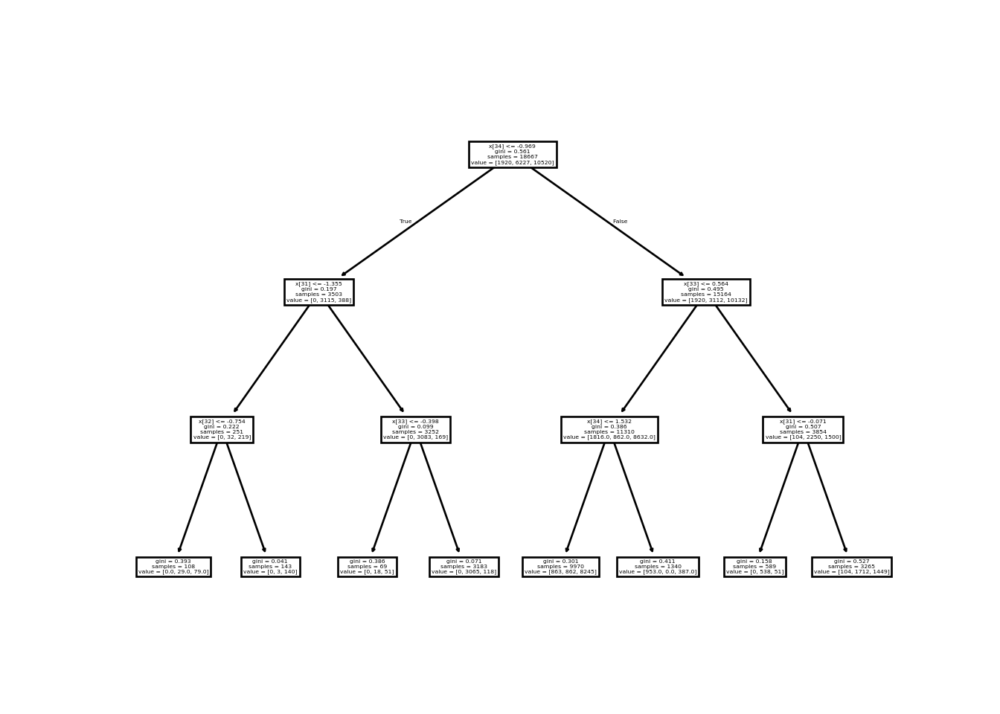
4.5.2 Poda Posterior (Post-Pruning) con ccp_alpha
Se puedes realizar poda posterior usando cost complexity pruning. Esto implica ajustar el parámetro ccp_alpha (el parámetro de complejidad de coste).
El árbol generará múltiples subárboles podados para diferentes valores de ccp_alpha, y tú puedes elegir el más adecuado evaluando su desempeño.
import matplotlib.pyplot as plt
# Crear un árbol sin poda
model = DecisionTreeClassifier(random_state=1994)
model.fit(pyX_train, pyy_train)DecisionTreeClassifier(random_state=1994)In a Jupyter environment, please rerun this cell to show the HTML representation or trust the notebook.
On GitHub, the HTML representation is unable to render, please try loading this page with nbviewer.org.
DecisionTreeClassifier(random_state=1994)
# Obtener valores de ccp_alpha
path = model.cost_complexity_pruning_path(pyX_train, pyy_train)
ccp_alphas = path.ccp_alphas
impurities = path.impurities
# Entrenar árboles para cada valor de ccp_alpha
models = []
for ccp_alpha in ccp_alphas:
clf = DecisionTreeClassifier(random_state=42, ccp_alpha=ccp_alpha)
clf.fit(pyX_train, pyy_train)
models.append(clf)DecisionTreeClassifier(ccp_alpha=0.12113075107966081, random_state=42)In a Jupyter environment, please rerun this cell to show the HTML representation or trust the notebook.
On GitHub, the HTML representation is unable to render, please try loading this page with nbviewer.org.
DecisionTreeClassifier(ccp_alpha=0.12113075107966081, random_state=42)
# Evaluar desempeño
train_scores = [clf.score(pyX_train, pyy_train) for clf in models]
test_scores = [clf.score(pyX_test, pyy_test) for clf in models]
# Graficar resultados
plt.figure(figsize=(8, 6))
plt.plot(ccp_alphas, train_scores, marker='o', label="Train Accuracy", drawstyle="steps-post")
plt.plot(ccp_alphas, test_scores, marker='o', label="Test Accuracy", drawstyle="steps-post")
plt.xlabel("ccp_alpha")
plt.ylabel("Accuracy")
plt.title("Accuracy vs ccp_alpha")
plt.legend()
plt.grid()
plt.show()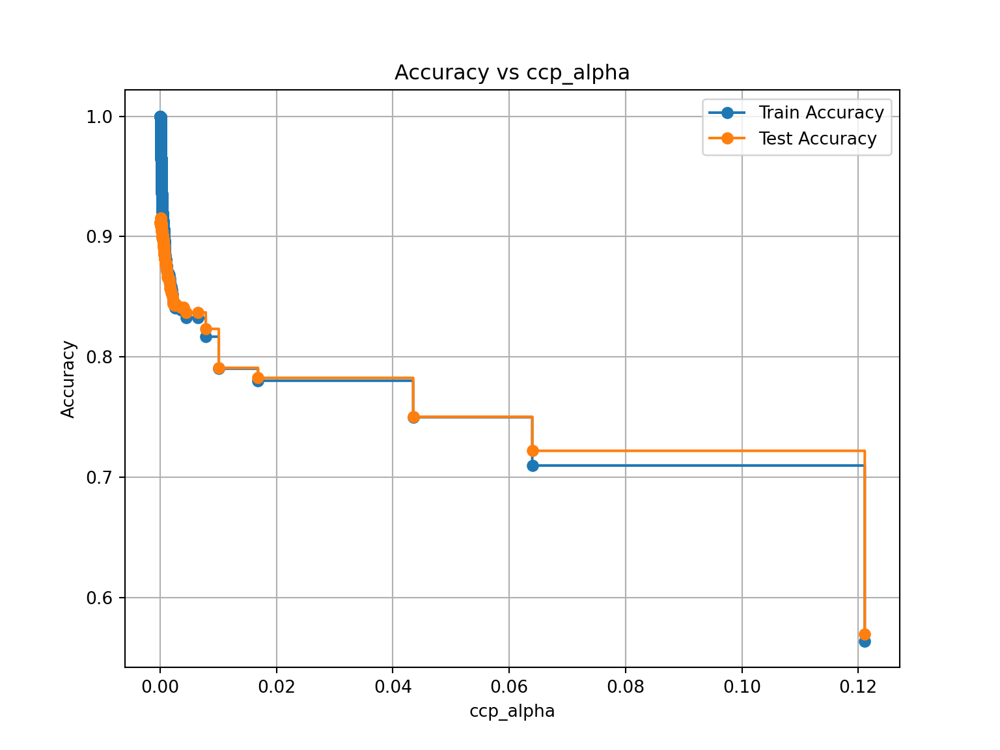
5 Random Forest
5.1 Aplicación del modelo
# Random Forest
library(randomForest)
## devtools::install_github('araastat/reprtree') # Se instala 1 vez para poder printar graficos
library(reprtree)
set.seed(1994)
arbol_rf <- randomForest(as.factor(RENTA) ~ ., data = rtrain, ntree = 25)# se observa el árbol número 20
tree20 <- getTree(arbol_rf, 20, labelVar = TRUE)
head(tree20) left daughter right daughter split var split point status
1 2 3 CONSTRUCTEDAREA 74.5000000 1
2 4 5 DISTANCE_TO_METRO 0.7023313 1
3 6 7 BATHNUMBER 2.5000000 1
4 8 9 HASWARDROBE 1.5000000 1
5 10 11 DISTANCE_TO_METRO 1.6344953 1
6 12 13 DISTANCE_TO_CITY_CENTER 1.1452018 1
prediction
1 <NA>
2 <NA>
3 <NA>
4 <NA>
5 <NA>
6 <NA>## Sin embargo, el método por el que se representa gráficamente no es muy claro y
## puede llevar a confusión o dificultar la interpretación del árbol.
## Si se desea estudiar el árbol, hasta un cierto nivel, se puede incluir el argumento depth.
## El árbol, ahora con una profundidad de 5 ramas.
plot.getTree(arbol_rf, k = 20, depth = 5)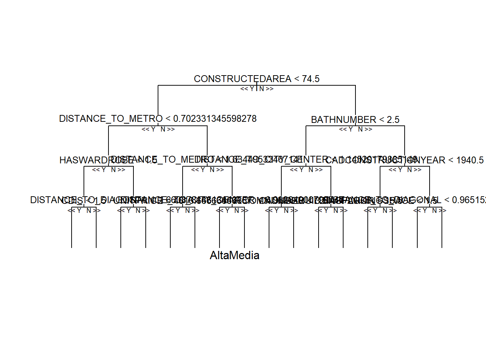
library(vip)
vip(arbol_rf)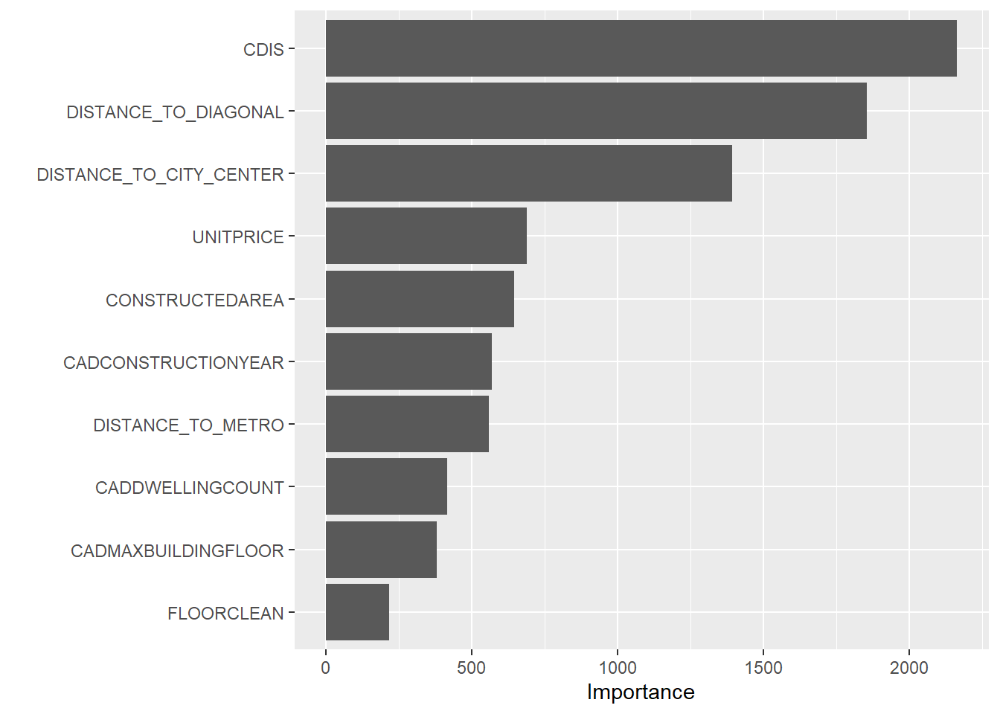
from sklearn.ensemble import RandomForestClassifier
clf = RandomForestClassifier()
clf.fit(pyX_train, pyy_train)RandomForestClassifier()In a Jupyter environment, please rerun this cell to show the HTML representation or trust the notebook.
On GitHub, the HTML representation is unable to render, please try loading this page with nbviewer.org.
RandomForestClassifier()
import pandas as pd
import matplotlib.pyplot as plt
results = pd.DataFrame(clf.feature_importances_, index=pyBCN.columns[:-1]).sort_values(by=0, ascending=False)
# Crear gráfico de barras horizontales
plt.figure(figsize=(10, 8))
plt.barh(results.index, results[0], color='skyblue')
# Añadir etiquetas y título
plt.xlabel('Importancia')
plt.ylabel('Características')
plt.title('Importancia de las Características')
plt.grid(axis='x', linestyle='--', alpha=0.7)
plt.show()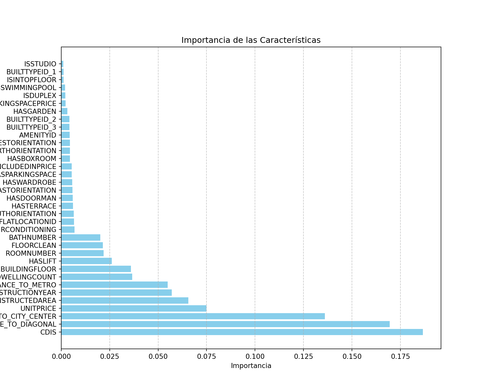
5.2 Hiperparameter tunning de Random Forest
# Identificamos los parámetros que podemos tunnerar
modelLookup("rf") model parameter label forReg forClass probModel
1 rf mtry #Randomly Selected Predictors TRUE TRUE TRUE# Se especifica un rango de valores posibles de mtry
tuneGrid <- expand.grid(mtry = c(1, 2, 5, 10))
tuneGrid mtry
1 1
2 2
3 5
4 10# se fija la semilla aleatoria
set.seed(1994)
# se entrena el modelo
model <- train(RENTA ~ ., data = rtrain,
ntree = 20,
method = "rf", metric = "Accuracy",
tuneGrid = tuneGrid,
trControl = trainControl(classProbs = TRUE))
# Visualizamos los hiperparámetros obtenidos
model$results mtry Accuracy Kappa AccuracySD KappaSD
1 1 0.7114013 0.4050249 0.021913133 0.053223045
2 2 0.8424843 0.7083545 0.005692328 0.011410794
3 5 0.9015691 0.8223990 0.003130659 0.006087154
4 10 0.9143875 0.8460688 0.002978894 0.0054156285.2.1 Ajuste de hiperparámetros con GridSearchCV
El GridSearchCV realiza una búsqueda exhaustiva sobre un conjunto de parámetros especificados. Probará todas las combinaciones posibles de hiperparámetros.
from sklearn.ensemble import RandomForestClassifier
from sklearn.model_selection import GridSearchCV, RandomizedSearchCV
# Definir los parámetros para la búsqueda
param_dist = {
'n_estimators': [150, 200], # Número de árboles en el bosque
'max_depth': [None, 10, 20], # Profundidad máxima del árbol
'min_samples_split': [2, 5, 10], # Número mínimo de muestras para dividir un nodo
'min_samples_leaf': [1, 2, 4], # Número mínimo de muestras en una hoja
'max_features': ['auto'], # Número de características a considerar para dividir un nodo
'bootstrap': [True] # Si usar bootstrap para los árboles
}
# Crear el modelo RandomForest
rf = RandomForestClassifier(random_state = 1994)
# Usar GridSearchCV para encontrar el mejor conjunto de parámetros
grid_search = GridSearchCV(estimator = rf, param_grid = param_grid, cv = 10, n_jobs = -1, verbose = 0)
# Ajustar el modelo con los datos de entrenamiento
grid_search.fit(pyX_train, pyy_train)
# Mostrar los mejores parámetros encontrados
print("Mejores parámetros encontrados:", grid_search.best_params_)
tree.plot_tree(grid_search.best_estimator_)5.2.2 Ajuste de Hiperparámetros con RandomizedSearchCV
RandomizedSearchCV es una técnica más eficiente que GridSearchCV, ya que no prueba todas las combinaciones posibles, sino un número limitado de combinaciones aleatorias dentro de un rango definido. Esto es útil si el espacio de búsqueda es grande y quieres evitar un tiempo de cómputo muy largo.
# Definir los parámetros para la búsqueda aleatoria
param_dist = {
'n_estimators': [150, 200], # Número de árboles en el bosque
'max_depth': [None, 10, 20], # Profundidad máxima del árbol
'min_samples_split': [2, 5, 10], # Número mínimo de muestras para dividir un nodo
'min_samples_leaf': [1, 2, 4], # Número mínimo de muestras en una hoja
'max_features': ['auto'], # Número de características a considerar para dividir un nodo
'bootstrap': [True] # Si usar bootstrap para los árboles
}
# Usar RandomizedSearchCV para búsqueda aleatoria
random_search = RandomizedSearchCV(estimator=rf, param_distributions=param_dist,
n_iter=50, cv=10, n_jobs=-1, random_state=1994)
# Ajustar el modelo con los datos de entrenamiento
random_search.fit(X_train, y_train)
# Mostrar los mejores parámetros encontrados
print("Mejores parámetros encontrados:", random_search.best_params_)
tree.plot_tree(random_search.best_estimator_)5.3 Predicciones del algoritmo
prediccion <- predict(arbol_rf, rtrain, type = "class")
caret::confusionMatrix(prediccion, as.factor(rtrain$RENTA))Confusion Matrix and Statistics
Reference
Prediction Alta Baja Media
Alta 1931 0 3
Baja 0 6211 7
Media 10 21 10486
Overall Statistics
Accuracy : 0.9978
95% CI : (0.997, 0.9984)
No Information Rate : 0.5622
P-Value [Acc > NIR] : < 2.2e-16
Kappa : 0.9961
Mcnemar's Test P-Value : NA
Statistics by Class:
Class: Alta Class: Baja Class: Media
Sensitivity 0.9948 0.9966 0.9990
Specificity 0.9998 0.9994 0.9962
Pos Pred Value 0.9984 0.9989 0.9971
Neg Pred Value 0.9994 0.9983 0.9988
Prevalence 0.1040 0.3338 0.5622
Detection Rate 0.1034 0.3327 0.5617
Detection Prevalence 0.1036 0.3331 0.5633
Balanced Accuracy 0.9973 0.9980 0.9976# Realizamos las predicciones de este ultimo arbol para la predicción de test
## Si no decimos nada en type (type = prob), nos devolvera la probabilidad de
## pertenecer a cada clase.
prediccion <- predict(arbol_rf, rtest, type = "class")
## Para ver la performance, realizaremos la matriz de confusión
caret::confusionMatrix(prediccion, as.factor(rtest$RENTA))Confusion Matrix and Statistics
Reference
Prediction Alta Baja Media
Alta 344 1 52
Baja 1 1382 76
Media 122 134 2553
Overall Statistics
Accuracy : 0.9173
95% CI : (0.909, 0.925)
No Information Rate : 0.5747
P-Value [Acc > NIR] : < 2.2e-16
Kappa : 0.8478
Mcnemar's Test P-Value : 1.382e-09
Statistics by Class:
Class: Alta Class: Baja Class: Media
Sensitivity 0.73662 0.9110 0.9523
Specificity 0.98737 0.9755 0.8710
Pos Pred Value 0.86650 0.9472 0.9089
Neg Pred Value 0.97118 0.9579 0.9310
Prevalence 0.10011 0.3252 0.5747
Detection Rate 0.07374 0.2962 0.5473
Detection Prevalence 0.08510 0.3128 0.6021
Balanced Accuracy 0.86200 0.9433 0.9116CM <- caret::confusionMatrix(prediccion, as.factor(rtest$RENTA)); CM <- data.frame(CM$table)
grafico <- ggplot(CM, aes(Prediction,Reference, fill= Freq)) +
geom_tile() + geom_text(aes(label=Freq)) +
scale_fill_gradient(low="white", high="#009194") +
labs(x = "Reference",y = "Prediction")
plot(grafico)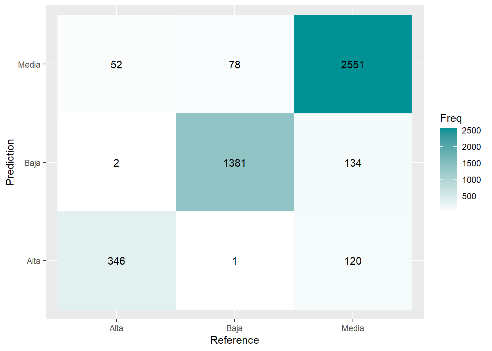
preds = clf.predict(pyX_test)
print(f'Classification Report: \n{classification_report(pyy_test, preds)}')Classification Report:
precision recall f1-score support
0 0.90 0.77 0.83 488
1 0.95 0.90 0.93 1522
2 0.91 0.96 0.93 2657
accuracy 0.92 4667
macro avg 0.92 0.88 0.90 4667
weighted avg 0.92 0.92 0.92 4667# Confusion matrix
cf_matrix = confusion_matrix(pyy_test, preds)
sns.heatmap(cf_matrix, annot=True, fmt='d', cmap='Blues', cbar=False)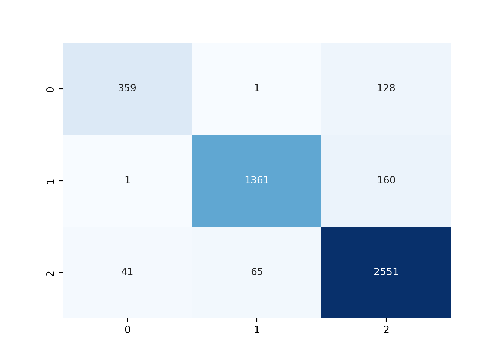
6 eXtrem Gradient Boosting (XGBoost)
6.1 Aplicamos el algoritmo con cross-validation e hiperparameter tunning
Para aplicar los modelos de XGBoost es necesario pasar los datos categoricos en dummies. Una variable dummy (también conocida como cualitativa o binaria) es aquella que toma el valor 1 o 0 para indicar la presencia o ausencia de una cierta característica o condición.
Si quisieramos hacerlo en cross validación hariamos lo siguiente:
6.2 Predicciones
Esta web está creada por Dante Conti y Sergi Ramírez, (c) 2024